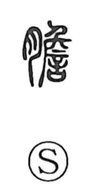

胆

Kun: kimo | On: tan
gallbladder ・ bile ・ courage
Explanation
Originally written 膽, this is an ideophonetic character: the flesh radical signals a bodily organ, while the phonetic component 詹—later simplified to 旦—gives the on reading tan. The Shuowen defines it as “an intestine passing through the liver,” identifying the gallbladder, the bile-holding organ situated to the right of the liver. Because liver and gallbladder were seen as a paired system, the character figures in expressions like 肝胆相照らす, evoking intimate mutual trust. Traditional thought also located nerve and resolve in the gallbladder, which is why 胆 appears in words for courage and daring—胆力, 大胆, 胆勇, 胆略—and in phrases such as 心胆を寒からしむ, to chill one’s heart and gall with fear.